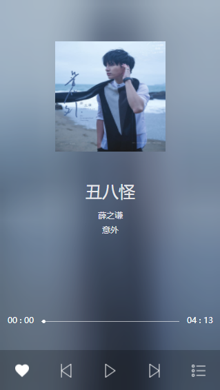
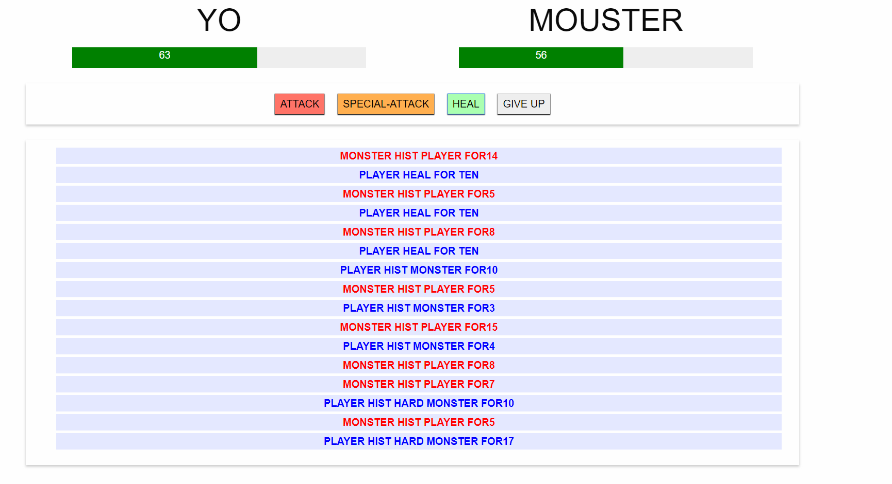
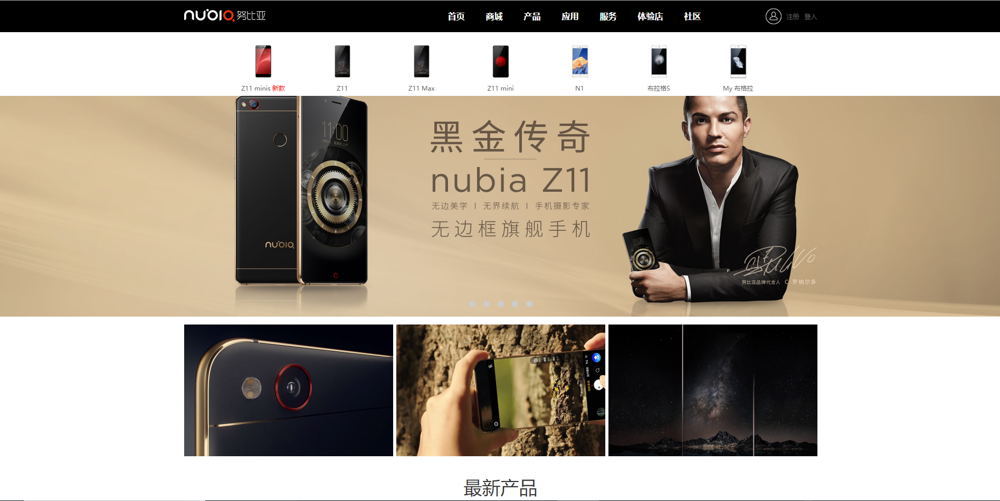
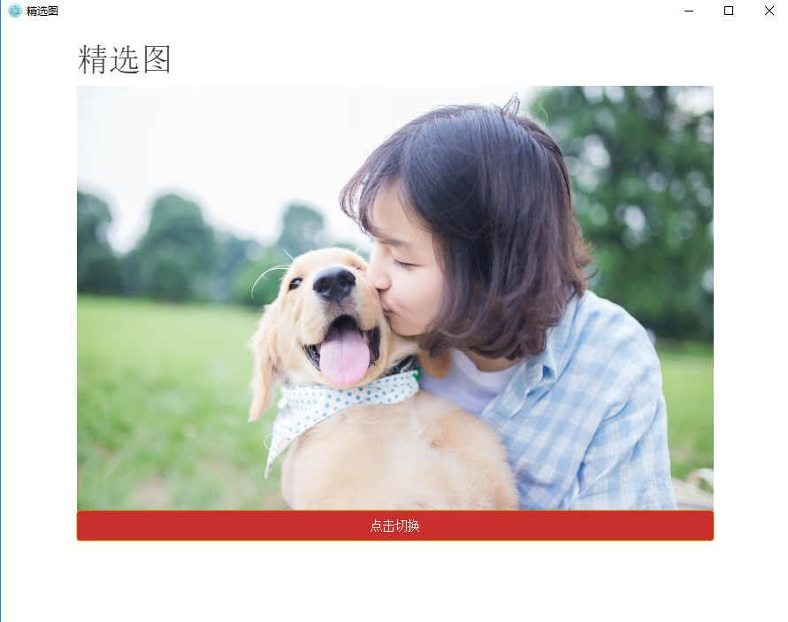
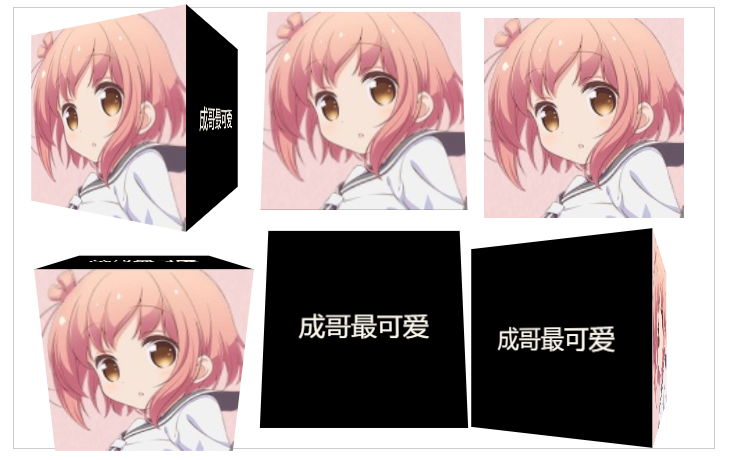
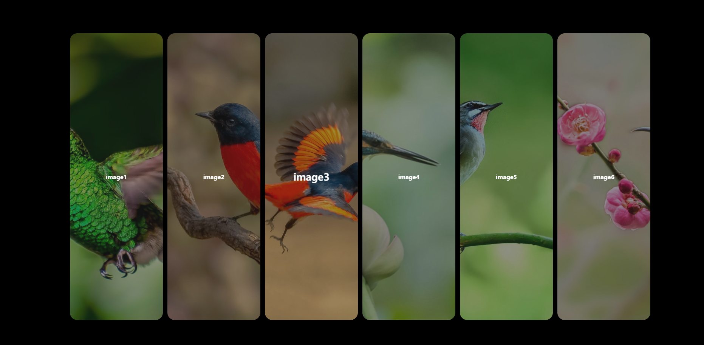

郑志鹏
一个热爱编程的男孩
菜单
关于我
偶然间接触web从此走一条不归路✌
学习渠道:
W3cSchool
MDN
书籍和视频
阅读书籍:
<dom编程的艺术>
<高级程序设计>
<高性能javascript>
<高性能你不知道的js>
掌握技能:
html5
css3
javaScript
科学上网🙈
能够使用gulp webpack git 等工具开发,能使用css预处理及es6部分功能
github:
https://github.com/zhengdiandian
联系我
qq邮箱:
1448487333@qq.com
Google邮箱:
zzp19980703@gmail.com
a iphone number:
18888335875
养我
点击拨打电话
点击发送邮件
点击发送短信
#关于我
#联系我
#养我
音乐播放器
发布于: 2017/10/25 | 阅读: 121 | 标签: #生活 #HTML

使用gupl构建,zopto完成的音乐播放器,请打开浏览器开发工具的手机模式使用,实现了歌曲,专辑图片,高斯模糊背景的同步切换,歌曲列表的控制.未使用api所以里头只有三首歌.
使用方法: 命令行输入 1.npm install 2. gulp
进入项目地址
vue打怪兽小游戏
发布于: 2017/10/25 | 阅读: 121 | 标签: #css #vue #HTML

使用Vue实现的打怪游戏非常的简单 有普通攻击 特殊攻击 治疗 战斗日志
使用方法: 下载后打开HTML文件即可
进入项目地址
仿写努比亚官网
发布于: 2017/10/25 | 阅读: 121 | 标签: #css #HTML

使用css3仿写的努比亚手机官网,全部都是css3功能实现的
使用方法: 下载后打开HTML文件即可
进入项目地址
使用electron打包项目
发布于: 2017/10/25 | 阅读: 121 | 标签: #css #HTML

将项目打包成exe文件,可在电脑上直接运行.实现跨端,其实就是在外头包装了一个浏览器.体积变大了很多.所以就没传打包好的项目.用了某个福利Api,请自行打包: electron-packager ..
使用方法: 1.npm. install 2.electron-packager .
进入项目地址
鼠标进入反转
发布于: 2017/10/25 | 阅读: 121 | 标签: #css #js #HTML

js实现根据鼠标进入位置进行翻转方块 参考地址:
流云诸葛
使用方法: 直接打开HTML
进入项目地址
jquery照片列表
发布于: 2017/10/25 | 阅读: 121 | 标签: #jquery #css #js #HTML

使用jquery写的照片列表demo
使用方法: 直接打开HTML
进入项目地址
{kind=link}
{kind=link}
{kind=link}
{kind=link}
{kind=link}
{kind=link}